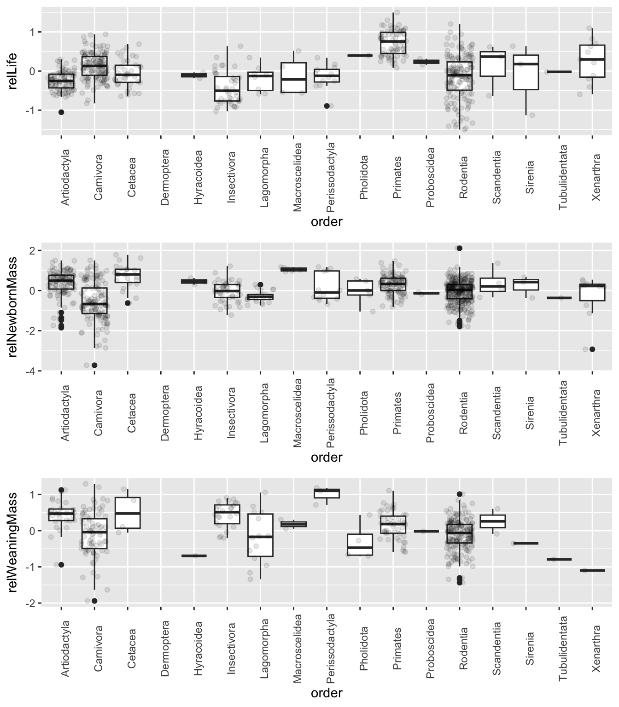
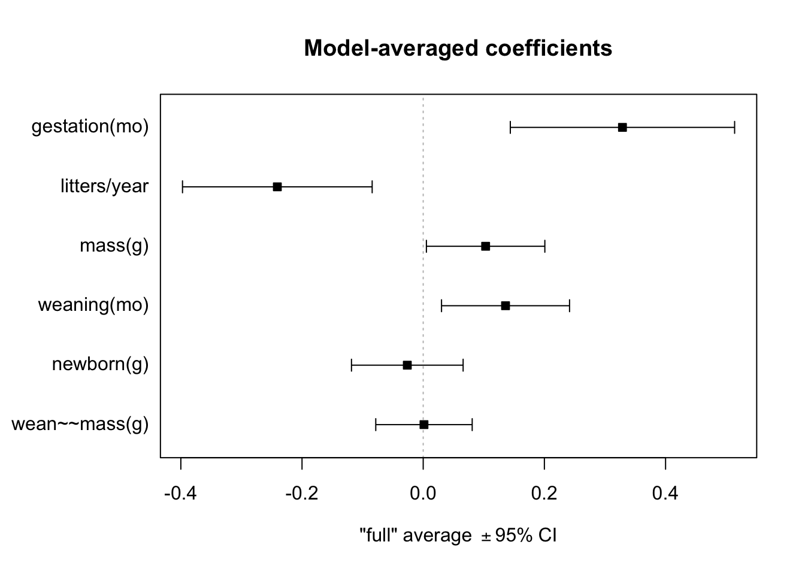
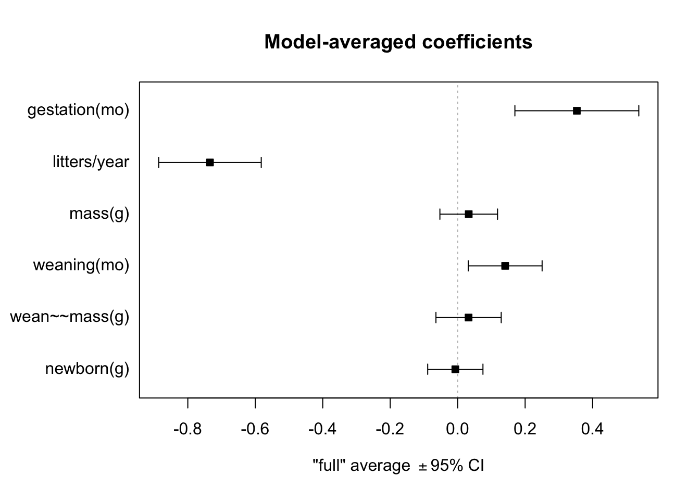

library(tidyverse)
library(skimr)
library(cowplot)
library(broom)
library(MuMIn)Exercise 12 Solution
• Solution
- Using the {tidyverse}
read_tsv()function, load the “Mammal_lifehistories_v2.txt” dataset as a “tibble” named d
f <- "https://raw.githubusercontent.com/difiore/ada-2024-datasets/main/Mammal_lifehistories_v2.txt"
d <- read_tsv(f, col_names = TRUE)- Do a bit of exploratory data analysis with this dataset, e.g., using the {skimr} package. Which of the variables are categorical and which are numeric?
skim(d)| Name | d |
| Number of rows | 1440 |
| Number of columns | 14 |
| _______________________ | |
| Column type frequency: | |
| character | 4 |
| numeric | 10 |
| ________________________ | |
| Group variables | None |
Variable type: character
| skim_variable | n_missing | complete_rate | min | max | empty | n_unique | whitespace |
|---|---|---|---|---|---|---|---|
| order | 0 | 1 | 7 | 14 | 0 | 17 | 0 |
| family | 0 | 1 | 6 | 15 | 0 | 96 | 0 |
| Genus | 0 | 1 | 3 | 16 | 0 | 618 | 0 |
| species | 0 | 1 | 3 | 17 | 0 | 1191 | 0 |
Variable type: numeric
| skim_variable | n_missing | complete_rate | mean | sd | p0 | p25 | p50 | p75 | p100 | hist |
|---|---|---|---|---|---|---|---|---|---|---|
| mass(g) | 0 | 1 | 3.835767e+05 | 5.055163e+06 | -999 | 50 | 403.02 | 7009.17 | 1.490000e+08 | ▇▁▁▁▁ |
| gestation(mo) | 0 | 1 | -2.872500e+02 | 4.553600e+02 | -999 | -999 | 1.05 | 4.50 | 2.146000e+01 | ▃▁▁▁▇ |
| newborn(g) | 0 | 1 | 6.703150e+03 | 9.091252e+04 | -999 | -999 | 2.65 | 98.00 | 2.250000e+06 | ▇▁▁▁▁ |
| weaning(mo) | 0 | 1 | -4.271700e+02 | 4.967100e+02 | -999 | -999 | 0.73 | 2.00 | 4.800000e+01 | ▆▁▁▁▇ |
| wean mass(g) | 0 | 1 | 1.604893e+04 | 5.036502e+05 | -999 | -999 | -999.00 | 10.00 | 1.907500e+07 | ▇▁▁▁▁ |
| AFR(mo) | 0 | 1 | -4.081200e+02 | 5.049700e+02 | -999 | -999 | 2.50 | 15.61 | 2.100000e+02 | ▆▁▁▁▇ |
| max. life(mo) | 0 | 1 | -4.902600e+02 | 6.153000e+02 | -999 | -999 | -999.00 | 147.25 | 1.368000e+03 | ▇▁▅▁▁ |
| litter size | 0 | 1 | -5.563000e+01 | 2.348800e+02 | -999 | 1 | 2.27 | 3.84 | 1.418000e+01 | ▁▁▁▁▇ |
| litters/year | 0 | 1 | -4.771400e+02 | 5.000300e+02 | -999 | -999 | 0.38 | 1.15 | 7.500000e+00 | ▇▁▁▁▇ |
| refs | 0 | 1 | 1.054762e+12 | 3.619709e+13 | 1 | 116 | 1229.00 | 1242249.75 | 1.368101e+15 | ▇▁▁▁▁ |
The variables order, family, Genus, and species are categorical, the rest are numeric.
Challenge 1
Step 1
- Replace all values of -999 (the authors’ code for missing data) with
NA.
d[d == -999] <- NA # using base ***R***
# OR library(naniar) d <- d %>% replace_with_na_all(condition = ~.x == -999)Step 2
- Drop the variables litter size and refs.
d <- d |>
select(-c("litter size", "refs"))Step 3
- Log transform all of the other numeric variables.
d <- d |>
mutate(across(where(is.numeric), log))
# OR vars <- c('mass(g)', 'gestation(mo)', 'newborn(g)', 'weaning(mo)', 'wean
# mass(g)', 'AFR(mo)', 'max. life(mo)', 'litters/year') d <- d
# |>mutate(across(all_of(vars), log))Step 4
- Regress the (now log transformed) age [gestation(mo), weaning(mo), AFR(mo) (i.e., age at first reproduction), and max. life(mo) (i.e., maximum lifespan)] and mass [newborn(g) and wean mass(g)] variables on (now log transformed) overall body mass(g) and add the residuals to the dataframe as new variables [relGest, relWean, relAFR, relLife, relNewbornMass, and relWeaningMass].
d$relGest <- resid(lm(`gestation(mo)` ~ `mass(g)`, data = d, na.action = na.exclude))
d$relWean <- resid(lm(`weaning(mo)` ~ `mass(g)`, data = d, na.action = na.exclude))
d$relAFR <- resid(lm(`AFR(mo)` ~ `mass(g)`, data = d, na.action = na.exclude))
d$relLife <- resid(lm(`max. life(mo)` ~ `mass(g)`, data = d, na.action = na.exclude))
d$relNewbornMass <- resid(lm(`newborn(g)` ~ `mass(g)`, data = d, na.action = na.exclude))
d$relWeaningMass <- resid(lm(`wean mass(g)` ~ `mass(g)`, data = d, na.action = na.exclude))
# OR d <- d |> mutate( relGest = resid(lm(`gestation(mo)` ~ `mass(g)`, data =
# d, na.action=na.exclude)), relWean = resid(lm(`weaning(mo)` ~ `mass(g)`, data
# = d,na.action=na.exclude)), relAFR = resid(lm(`AFR(mo)` ~ `mass(g)`, data =
# d, na.action=na.exclude)), relLife = resid(lm(`max. life(mo)` ~ `mass(g)`,
# data = d, na.action=na.exclude)), relNewbornMass = resid(lm(`newborn(g)` ~
# `mass(g)`, data = d, na.action=na.exclude)), relWeaningMass = resid(lm(`wean
# mass(g)` ~ `mass(g)`, data = d, na.action=na.exclude)) )Step 5
- Plot residuals of max lifespan (relLife) in relation to Order. Which mammalian orders have the highest residual lifespan?
- Plot residuals of newborn mass (relNewbornMass) in relation to Order. Which mammalian orders have the have highest residual newborn mass?
- Plot residuals of weaning mass (relWeaningMass) in relation to Order. Which mammalian orders have the have highest residual weaning mass?
p1 <- ggplot(data = d, aes(x = order, y = relLife)) + geom_boxplot(na.rm = TRUE) +
geom_jitter(na.rm = TRUE, alpha = 0.1) + theme(axis.text.x = element_text(angle = 90))
p2 <- ggplot(data = d, aes(x = order, y = relNewbornMass)) + geom_boxplot(na.rm = TRUE) +
geom_jitter(na.rm = TRUE, alpha = 0.1) + theme(axis.text.x = element_text(angle = 90))
p3 <- ggplot(data = d, aes(x = order, y = relWeaningMass)) + geom_boxplot(na.rm = TRUE) +
geom_jitter(na.rm = TRUE, alpha = 0.1) + theme(axis.text.x = element_text(angle = 90))
plot_grid(p1, p2, p3, nrow = 3)
- Order Primates has the highest residual lifespan.
- Orders Macroscelidae and Cetacea have the highest residual newborn mass.
- Order Perrisodactyla has the highest residual weaning mass.
Step 6
- Run models and a model selection process to evaluate what (now log transformed) variables best predict each of the two response variables, max. life(mo) and AFR(mo), from the set of the following predictors: gestation(mo), newborn(g), weaning(mo), wean mass(g), litters/year, and overall body mass(g).
Maximum Lifespan
Using Stepwise Model Selection
d1 <- d |>
drop_na(c("max. life(mo)", "gestation(mo)", "newborn(g)", "weaning(mo)", "wean mass(g)",
"litters/year", "mass(g)"))
ML_full <- lm(`max. life(mo)` ~ `gestation(mo)` + `newborn(g)` + `weaning(mo)` +
`wean mass(g)` + `litters/year` + `mass(g)`, data = d1, na.action = na.fail)
summary(ML_full)##
## Call:
## lm(formula = `max. life(mo)` ~ `gestation(mo)` + `newborn(g)` +
## `weaning(mo)` + `wean mass(g)` + `litters/year` + `mass(g)`,
## data = d1, na.action = na.fail)
##
## Residuals:
## Min 1Q Median 3Q Max
## -1.41516 -0.24524 -0.02146 0.30217 1.02653
##
## Coefficients:
## Estimate Std. Error t value Pr(>|t|)
## (Intercept) 3.861775 0.173884 22.209 < 2e-16 ***
## `gestation(mo)` 0.376680 0.098926 3.808 0.000186 ***
## `newborn(g)` -0.067921 0.058839 -1.154 0.249715
## `weaning(mo)` 0.126879 0.054254 2.339 0.020334 *
## `wean mass(g)` 0.008042 0.069187 0.116 0.907585
## `litters/year` -0.227594 0.079839 -2.851 0.004816 **
## `mass(g)` 0.128250 0.056485 2.271 0.024230 *
## ---
## Signif. codes: 0 '***' 0.001 '**' 0.01 '*' 0.05 '.' 0.1 ' ' 1
##
## Residual standard error: 0.4482 on 202 degrees of freedom
## Multiple R-squared: 0.7713, Adjusted R-squared: 0.7645
## F-statistic: 113.6 on 6 and 202 DF, p-value: < 2.2e-16ML_null <- lm(`max. life(mo)` ~ 1, data = d1, na.action = na.fail)
# using backwards selection
drop1(ML_full, test = "F")## Single term deletions
##
## Model:
## `max. life(mo)` ~ `gestation(mo)` + `newborn(g)` + `weaning(mo)` +
## `wean mass(g)` + `litters/year` + `mass(g)`
## Df Sum of Sq RSS AIC F value Pr(>F)
## <none> 40.579 -328.57
## `gestation(mo)` 1 2.91254 43.491 -316.08 14.4986 0.000186 ***
## `newborn(g)` 1 0.26769 40.846 -329.20 1.3326 0.249715
## `weaning(mo)` 1 1.09864 41.677 -324.99 5.4690 0.020334 *
## `wean mass(g)` 1 0.00271 40.581 -330.56 0.0135 0.907585
## `litters/year` 1 1.63243 42.211 -322.33 8.1262 0.004816 **
## `mass(g)` 1 1.03563 41.614 -325.30 5.1553 0.024230 *
## ---
## Signif. codes: 0 '***' 0.001 '**' 0.01 '*' 0.05 '.' 0.1 ' ' 1b2 <- update(ML_full, . ~ . - `wean mass(g)`)
drop1(b2, test = "F")## Single term deletions
##
## Model:
## `max. life(mo)` ~ `gestation(mo)` + `newborn(g)` + `weaning(mo)` +
## `litters/year` + `mass(g)`
## Df Sum of Sq RSS AIC F value Pr(>F)
## <none> 40.581 -330.56
## `gestation(mo)` 1 2.91040 43.492 -318.08 14.5587 0.0001803 ***
## `newborn(g)` 1 0.30876 40.890 -330.97 1.5445 0.2153774
## `weaning(mo)` 1 1.12655 41.708 -326.83 5.6353 0.0185347 *
## `litters/year` 1 1.65592 42.237 -324.20 8.2834 0.0044291 **
## `mass(g)` 1 1.98136 42.563 -322.59 9.9114 0.0018901 **
## ---
## Signif. codes: 0 '***' 0.001 '**' 0.01 '*' 0.05 '.' 0.1 ' ' 1b3 <- update(b2, . ~ . - `newborn(g)`)
drop1(b3, test = "F")## Single term deletions
##
## Model:
## `max. life(mo)` ~ `gestation(mo)` + `weaning(mo)` + `litters/year` +
## `mass(g)`
## Df Sum of Sq RSS AIC F value Pr(>F)
## <none> 40.890 -330.97
## `gestation(mo)` 1 3.2383 44.128 -317.04 16.1557 8.207e-05 ***
## `weaning(mo)` 1 1.4682 42.358 -325.60 7.3248 0.007377 **
## `litters/year` 1 2.0193 42.909 -322.90 10.0743 0.001736 **
## `mass(g)` 1 4.0694 44.959 -313.14 20.3024 1.113e-05 ***
## ---
## Signif. codes: 0 '***' 0.001 '**' 0.01 '*' 0.05 '.' 0.1 ' ' 1# no more to drop
# using forward selection
add1(ML_null, . ~ . + `gestation(mo)` + `newborn(g)` + `weaning(mo)` + `wean mass(g)` +
`litters/year` + `mass(g)`, test = "F")## Single term additions
##
## Model:
## `max. life(mo)` ~ 1
## Df Sum of Sq RSS AIC F value Pr(>F)
## <none> 177.452 -32.20
## `gestation(mo)` 1 122.169 55.283 -273.94 457.45 < 2.2e-16 ***
## `newborn(g)` 1 113.172 64.280 -242.43 364.44 < 2.2e-16 ***
## `weaning(mo)` 1 99.056 78.396 -200.94 261.55 < 2.2e-16 ***
## `wean mass(g)` 1 117.341 60.111 -256.44 404.08 < 2.2e-16 ***
## `litters/year` 1 100.053 77.398 -203.61 267.59 < 2.2e-16 ***
## `mass(g)` 1 116.049 61.402 -252.00 391.23 < 2.2e-16 ***
## ---
## Signif. codes: 0 '***' 0.001 '**' 0.01 '*' 0.05 '.' 0.1 ' ' 1f2 <- update(ML_null, . ~ . + `gestation(mo)`)
add1(f2, . ~ . + `gestation(mo)` + `newborn(g)` + `weaning(mo)` + `wean mass(g)` +
`litters/year` + `mass(g)`, test = "F")## Single term additions
##
## Model:
## `max. life(mo)` ~ `gestation(mo)`
## Df Sum of Sq RSS AIC F value Pr(>F)
## <none> 55.283 -273.94
## `newborn(g)` 1 2.2088 53.074 -280.47 8.5731 0.003795 **
## `weaning(mo)` 1 5.5215 49.761 -293.94 22.8579 3.316e-06 ***
## `wean mass(g)` 1 5.4940 49.789 -293.82 22.7312 3.519e-06 ***
## `litters/year` 1 9.6219 45.661 -311.91 43.4095 3.639e-10 ***
## `mass(g)` 1 6.6254 48.657 -298.62 28.0498 3.024e-07 ***
## ---
## Signif. codes: 0 '***' 0.001 '**' 0.01 '*' 0.05 '.' 0.1 ' ' 1f3 <- update(f2, . ~ . + `litters/year`)
add1(f3, . ~ . + `gestation(mo)` + `newborn(g)` + `weaning(mo)` + `wean mass(g)` +
`litters/year` + `mass(g)`, test = "F")## Single term additions
##
## Model:
## `max. life(mo)` ~ `gestation(mo)` + `litters/year`
## Df Sum of Sq RSS AIC F value Pr(>F)
## <none> 45.661 -311.91
## `newborn(g)` 1 1.6040 44.057 -317.38 7.4635 0.0068455 **
## `weaning(mo)` 1 0.7013 44.959 -313.14 3.1978 0.0752155 .
## `wean mass(g)` 1 2.6677 42.993 -322.49 12.7201 0.0004503 ***
## `mass(g)` 1 3.3026 42.358 -325.60 15.9834 8.915e-05 ***
## ---
## Signif. codes: 0 '***' 0.001 '**' 0.01 '*' 0.05 '.' 0.1 ' ' 1f4 <- update(f3, . ~ . + `mass(g)`)
add1(f4, . ~ . + `gestation(mo)` + `newborn(g)` + `weaning(mo)` + `wean mass(g)` +
`litters/year` + `mass(g)`, test = "F")## Single term additions
##
## Model:
## `max. life(mo)` ~ `gestation(mo)` + `litters/year` + `mass(g)`
## Df Sum of Sq RSS AIC F value Pr(>F)
## <none> 42.358 -325.60
## `newborn(g)` 1 0.65041 41.708 -326.83 3.1813 0.075974 .
## `weaning(mo)` 1 1.46819 40.890 -330.97 7.3248 0.007377 **
## `wean mass(g)` 1 0.04196 42.316 -323.81 0.2023 0.653345
## ---
## Signif. codes: 0 '***' 0.001 '**' 0.01 '*' 0.05 '.' 0.1 ' ' 1f5 <- update(f4, . ~ . + `weaning(mo)`)
add1(f5, . ~ . + `gestation(mo)` + `newborn(g)` + `weaning(mo)` + `wean mass(g)` +
`litters/year` + `mass(g)`, test = "F")## Single term additions
##
## Model:
## `max. life(mo)` ~ `gestation(mo)` + `litters/year` + `mass(g)` +
## `weaning(mo)`
## Df Sum of Sq RSS AIC F value Pr(>F)
## <none> 40.890 -330.97
## `newborn(g)` 1 0.308765 40.581 -330.56 1.5445 0.2154
## `wean mass(g)` 1 0.043789 40.846 -329.20 0.2176 0.6414# no more to addBoth forward and backward selection using F ratio tests yield the same best model…
\[max. life(mo) \sim gestation(mo) + weaning(mo) + litters/year + mass(g)\]
Using AICc
ML_mods <- dredge(ML_full)## Fixed term is "(Intercept)"head(coef(ML_mods), 10) # top 10 models## (Intercept) `gestation(mo)` `litters/year` `mass(g)` `weaning(mo)`
## 40 3.998909 0.2940783 -0.2474480 0.08591653 0.1421767
## 48 3.865397 0.3764905 -0.2283866 0.13261110 0.1276109
## 56 3.988708 0.3076744 -0.2469755 0.10955724 0.1422660
## 64 3.861775 0.3766799 -0.2275937 0.12825043 0.1268787
## 52 4.110776 0.2894074 -0.2669214 NA 0.1346416
## 16 3.927433 0.4902189 -0.3201992 0.14352724 NA
## 8 4.136516 0.3869647 -0.3641313 0.07593844 NA
## 60 4.064502 0.3181420 -0.2599531 NA 0.1273638
## 32 3.914163 0.4886737 -0.3157965 0.12877056 NA
## 46 3.558604 0.4042026 NA 0.17090404 0.2030174
## `newborn(g)` `wean mass(g)`
## 40 NA NA
## 48 -0.06477636 NA
## 56 NA -0.028684385
## 64 -0.06792115 0.008041606
## 52 NA 0.087704974
## 16 -0.09175290 NA
## 8 NA NA
## 60 -0.02962093 0.112382090
## 32 -0.10172794 0.026827785
## 46 -0.09377062 NA(ML_mods.avg <- summary(model.avg(ML_mods, subset = delta < 4)))##
## Call:
## model.avg(object = ML_mods, subset = delta < 4)
##
## Component model call:
## lm(formula = `max. life(mo)` ~ <5 unique rhs>, data = d1, na.action =
## na.fail)
##
## Component models:
## df logLik AICc delta weight
## 1236 6 -126.07 264.56 0.00 0.39
## 12346 7 -125.28 265.12 0.56 0.30
## 12356 7 -125.96 266.48 1.92 0.15
## 123456 8 -125.27 267.27 2.71 0.10
## 1256 6 -128.05 268.51 3.95 0.05
##
## Term codes:
## `gestation(mo)` `litters/year` `mass(g)` `newborn(g)` `wean mass(g)`
## 1 2 3 4 5
## `weaning(mo)`
## 6
##
## Model-averaged coefficients:
## (full average)
## Estimate Std. Error Adjusted SE z value Pr(>|z|)
## (Intercept) 3.949706 0.166665 0.167466 23.585 < 2e-16 ***
## `gestation(mo)` 0.328869 0.093972 0.094438 3.482 0.000497 ***
## `litters/year` -0.240736 0.079388 0.079854 3.015 0.002572 **
## `mass(g)` 0.103022 0.049693 0.049867 2.066 0.038835 *
## `weaning(mo)` 0.135875 0.053586 0.053901 2.521 0.011708 *
## `newborn(g)` -0.026237 0.046859 0.047008 0.558 0.576748
## `wean mass(g)` 0.001288 0.040439 0.040600 0.032 0.974699
##
## (conditional average)
## Estimate Std. Error Adjusted SE z value Pr(>|z|)
## (Intercept) 3.949706 0.166665 0.167466 23.585 < 2e-16 ***
## `gestation(mo)` 0.328869 0.093972 0.094438 3.482 0.000497 ***
## `litters/year` -0.240736 0.079388 0.079854 3.015 0.002572 **
## `mass(g)` 0.108990 0.044295 0.044501 2.449 0.014320 *
## `weaning(mo)` 0.135875 0.053586 0.053901 2.521 0.011708 *
## `newborn(g)` -0.065577 0.053928 0.054252 1.209 0.226761
## `wean mass(g)` 0.004185 0.072820 0.073111 0.057 0.954353
## ---
## Signif. codes: 0 '***' 0.001 '**' 0.01 '*' 0.05 '.' 0.1 ' ' 1- What is the best model overall based on AICc and how many models have a delta AICc of 4 or less?
The best model overall is max. life(mo) ~ gestation(mo) + weaning(mo) + litters/year + mass(g), the same as identified by both forward and backwards selection. Five models have a delta AICc of < 4.
- What variables, if any, appear in all of this set of “top” models?
The variables gestation(mo), litters/year, mass(g), and weaning(mo) appear in all of the models with delta AICc of ≤ 4.
- Calculate and plot the model-averaged coefficients and their CIs across this set of top models.
confint(ML_mods.avg)## 2.5 % 97.5 %
## (Intercept) 3.62147891 4.27793347
## `gestation(mo)` 0.14377472 0.51396308
## `litters/year` -0.39724571 -0.08422565
## `mass(g)` 0.02176916 0.19621043
## `weaning(mo)` 0.03023157 0.24151902
## `newborn(g)` -0.17190901 0.04075518
## `wean mass(g)` -0.13911025 0.14748030plot(ML_mods.avg, full = TRUE, intercept = FALSE)
Based on the plot, we can again see that set of top models includes four predictors for which the 95% CI around the coefficient does not include zero. These are the same predictors identified by forward and backwards selection: gestation(mo), litters/year, mass(g), and weaning(mo).
Age at First Reproduction
Using Stepwise Model Selection
d2 <- d |>
drop_na(c("AFR(mo)", "gestation(mo)", "newborn(g)", "weaning(mo)", "wean mass(g)",
"litters/year", "mass(g)"))
AFR_full <- lm(`AFR(mo)` ~ `gestation(mo)` + `newborn(g)` + `weaning(mo)` + `wean mass(g)` +
`litters/year` + `mass(g)`, data = d2, na.action = na.fail)
AFR_null <- lm(`AFR(mo)` ~ 1, data = d2, na.action = na.fail)
# using backwards selection
drop1(AFR_full, test = "F")## Single term deletions
##
## Model:
## `AFR(mo)` ~ `gestation(mo)` + `newborn(g)` + `weaning(mo)` +
## `wean mass(g)` + `litters/year` + `mass(g)`
## Df Sum of Sq RSS AIC F value Pr(>F)
## <none> 69.997 -336.46
## `gestation(mo)` 1 3.6852 73.682 -324.91 13.5306 0.0002859 ***
## `newborn(g)` 1 0.1963 70.193 -337.72 0.7206 0.3967307
## `weaning(mo)` 1 1.4553 71.452 -333.03 5.3434 0.0215917 *
## `wean mass(g)` 1 0.1490 70.146 -337.90 0.5472 0.4601285
## `litters/year` 1 22.6366 92.634 -264.49 83.1123 < 2.2e-16 ***
## `mass(g)` 1 0.1974 70.194 -337.72 0.7247 0.3954149
## ---
## Signif. codes: 0 '***' 0.001 '**' 0.01 '*' 0.05 '.' 0.1 ' ' 1b2 <- update(AFR_full, . ~ . - `wean mass(g)`)
drop1(b2, test = "F")## Single term deletions
##
## Model:
## `AFR(mo)` ~ `gestation(mo)` + `newborn(g)` + `weaning(mo)` +
## `litters/year` + `mass(g)`
## Df Sum of Sq RSS AIC F value Pr(>F)
## <none> 70.146 -337.90
## `gestation(mo)` 1 3.6422 73.788 -326.53 13.3960 0.0003058 ***
## `newborn(g)` 1 0.0910 70.237 -339.56 0.3349 0.5633153
## `weaning(mo)` 1 1.6144 71.760 -333.89 5.9380 0.0154944 *
## `litters/year` 1 22.9076 93.054 -265.29 84.2552 < 2.2e-16 ***
## `mass(g)` 1 0.8376 70.984 -336.76 3.0808 0.0804066 .
## ---
## Signif. codes: 0 '***' 0.001 '**' 0.01 '*' 0.05 '.' 0.1 ' ' 1b3 <- update(b2, . ~ . - `newborn(g)`)
drop1(b3, test = "F")## Single term deletions
##
## Model:
## `AFR(mo)` ~ `gestation(mo)` + `weaning(mo)` + `litters/year` +
## `mass(g)`
## Df Sum of Sq RSS AIC F value Pr(>F)
## <none> 70.237 -339.56
## `gestation(mo)` 1 5.4185 75.655 -321.94 19.9807 1.171e-05 ***
## `weaning(mo)` 1 1.8804 72.117 -334.58 6.9341 0.008965 **
## `litters/year` 1 24.9554 95.192 -261.29 92.0233 < 2.2e-16 ***
## `mass(g)` 1 2.1463 72.383 -333.61 7.9144 0.005280 **
## ---
## Signif. codes: 0 '***' 0.001 '**' 0.01 '*' 0.05 '.' 0.1 ' ' 1# no more to drop
# forward selection
add1(AFR_null, . ~ . + `gestation(mo)` + `newborn(g)` + `weaning(mo)` + `wean mass(g)` +
`litters/year` + `mass(g)`, test = "F")## Single term additions
##
## Model:
## `AFR(mo)` ~ 1
## Df Sum of Sq RSS AIC F value Pr(>F)
## <none> 391.65 106.12
## `gestation(mo)` 1 266.36 125.28 -192.78 557.03 < 2.2e-16 ***
## `newborn(g)` 1 233.51 158.14 -131.30 386.87 < 2.2e-16 ***
## `weaning(mo)` 1 244.14 147.51 -149.67 433.65 < 2.2e-16 ***
## `wean mass(g)` 1 244.96 146.69 -151.13 437.51 < 2.2e-16 ***
## `litters/year` 1 278.73 112.92 -220.22 646.75 < 2.2e-16 ***
## `mass(g)` 1 239.63 152.01 -141.72 413.02 < 2.2e-16 ***
## ---
## Signif. codes: 0 '***' 0.001 '**' 0.01 '*' 0.05 '.' 0.1 ' ' 1f2 <- update(AFR_null, . ~ . + `litters/year`)
add1(f2, . ~ . + `gestation(mo)` + `newborn(g)` + `weaning(mo)` + `wean mass(g)` +
`litters/year` + `mass(g)`, test = "F")## Single term additions
##
## Model:
## `AFR(mo)` ~ `litters/year`
## Df Sum of Sq RSS AIC F value Pr(>F)
## <none> 112.916 -220.22
## `gestation(mo)` 1 39.294 73.622 -331.13 139.303 < 2.2e-16 ***
## `newborn(g)` 1 32.477 80.438 -307.75 105.379 < 2.2e-16 ***
## `weaning(mo)` 1 17.618 95.298 -263.00 48.251 2.979e-11 ***
## `wean mass(g)` 1 31.485 81.430 -304.52 100.916 < 2.2e-16 ***
## `mass(g)` 1 28.882 84.034 -296.21 89.703 < 2.2e-16 ***
## ---
## Signif. codes: 0 '***' 0.001 '**' 0.01 '*' 0.05 '.' 0.1 ' ' 1f3 <- update(f2, . ~ . + `gestation(mo)`)
add1(f3, . ~ . + `gestation(mo)` + `newborn(g)` + `weaning(mo)` + `wean mass(g)` +
`litters/year` + `mass(g)`, test = "F")## Single term additions
##
## Model:
## `AFR(mo)` ~ `litters/year` + `gestation(mo)`
## Df Sum of Sq RSS AIC F value Pr(>F)
## <none> 73.622 -331.13
## `newborn(g)` 1 0.71369 72.908 -331.70 2.5451 0.11185
## `weaning(mo)` 1 1.23838 72.383 -333.61 4.4482 0.03589 *
## `wean mass(g)` 1 1.52304 72.099 -334.65 5.4924 0.01985 *
## `mass(g)` 1 1.50422 72.117 -334.58 5.4231 0.02064 *
## ---
## Signif. codes: 0 '***' 0.001 '**' 0.01 '*' 0.05 '.' 0.1 ' ' 1f4 <- update(f3, . ~ . + `wean mass(g)`)
add1(f4, . ~ . + `gestation(mo)` + `newborn(g)` + `weaning(mo)` + `wean mass(g)` +
`litters/year` + `mass(g)`, test = "F")## Single term additions
##
## Model:
## `AFR(mo)` ~ `litters/year` + `gestation(mo)` + `wean mass(g)`
## Df Sum of Sq RSS AIC F value Pr(>F)
## <none> 72.099 -334.65
## `newborn(g)` 1 0.44927 71.649 -334.30 1.6240 0.20367
## `weaning(mo)` 1 1.80288 70.296 -339.33 6.6426 0.01051 *
## `mass(g)` 1 0.03965 72.059 -332.79 0.1425 0.70612
## ---
## Signif. codes: 0 '***' 0.001 '**' 0.01 '*' 0.05 '.' 0.1 ' ' 1f5 <- update(f4, . ~ . + `weaning(mo)`)
add1(f5, . ~ . + `gestation(mo)` + `newborn(g)` + `weaning(mo)` + `wean mass(g)` +
`litters/year` + `mass(g)`, test = "F")## Single term additions
##
## Model:
## `AFR(mo)` ~ `litters/year` + `gestation(mo)` + `wean mass(g)` +
## `weaning(mo)`
## Df Sum of Sq RSS AIC F value Pr(>F)
## <none> 70.296 -339.33
## `newborn(g)` 1 0.10143 70.194 -337.72 0.3728 0.5420
## `mass(g)` 1 0.10253 70.193 -337.72 0.3769 0.5398Again, both forward and backward selection using F ratio tests yield the same best model…
\[max. life(mo) \sim gestation(mo) + weaning(mo) + litters/year + mass(g)\]
Using AICc
AFR_mods <- dredge(AFR_full)## Fixed term is "(Intercept)"head(coef(AFR_mods), 10) # top 10 models## (Intercept) `gestation(mo)` `litters/year` `mass(g)` `weaning(mo)`
## 40 1.865571 0.3515017 -0.7311936 0.05757463 0.1443987
## 52 1.918063 0.3343795 -0.7402756 NA 0.1408658
## 48 1.797585 0.3939747 -0.7205625 0.08179348 0.1371941
## 56 1.876551 0.3394831 -0.7329602 0.03572031 0.1438754
## 60 1.862965 0.3716340 -0.7319557 NA 0.1314640
## 44 2.074817 0.3214482 -0.7666004 NA 0.1487558
## 64 1.776504 0.3964944 -0.7173683 0.05226162 0.1314778
## 20 2.033261 0.4347639 -0.8415227 NA NA
## 8 1.996944 0.4535600 -0.8367332 0.04731896 NA
## 28 1.906060 0.4966642 -0.8109774 NA NA
## `wean mass(g)` `newborn(g)`
## 40 NA NA
## 52 0.06388861 NA
## 48 NA -0.03372466
## 56 0.02627408 NA
## 60 0.09482855 -0.03778513
## 44 NA 0.05814792
## 64 0.05424074 -0.05542620
## 20 0.05377311 NA
## 8 NA NA
## 28 0.11782202 -0.07654879(AFR_mods.avg <- summary(model.avg(AFR_mods, subset = delta < 4)))##
## Call:
## model.avg(object = AFR_mods, subset = delta < 4)
##
## Component model call:
## lm(formula = `AFR(mo)` ~ <7 unique rhs>, data = d2, na.action =
## na.fail)
##
## Component models:
## df logLik AICc delta weight
## 1236 6 -199.82 411.97 0.00 0.29
## 1256 6 -199.93 412.19 0.22 0.26
## 12346 7 -199.65 413.74 1.77 0.12
## 12356 7 -199.74 413.92 1.95 0.11
## 12456 7 -199.74 413.92 1.95 0.11
## 1246 6 -201.22 414.76 2.79 0.07
## 123456 8 -199.37 415.30 3.33 0.05
##
## Term codes:
## `gestation(mo)` `litters/year` `mass(g)` `newborn(g)` `wean mass(g)`
## 1 2 3 4 5
## `weaning(mo)`
## 6
##
## Model-averaged coefficients:
## (full average)
## Estimate Std. Error Adjusted SE z value Pr(>|z|)
## (Intercept) 1.881883 0.157221 0.157826 11.924 < 2e-16 ***
## `gestation(mo)` 0.353306 0.093289 0.093702 3.771 0.000163 ***
## `litters/year` -0.734295 0.077192 0.077547 9.469 < 2e-16 ***
## `mass(g)` 0.032778 0.043499 0.043601 0.752 0.452196
## `weaning(mo)` 0.140805 0.055623 0.055883 2.520 0.011747 *
## `wean mass(g)` 0.032328 0.049236 0.049353 0.655 0.512445
## `newborn(g)` -0.006927 0.041658 0.041781 0.166 0.868313
##
## (conditional average)
## Estimate Std. Error Adjusted SE z value Pr(>|z|)
## (Intercept) 1.88188 0.15722 0.15783 11.924 < 2e-16 ***
## `gestation(mo)` 0.35331 0.09329 0.09370 3.771 0.000163 ***
## `litters/year` -0.73429 0.07719 0.07755 9.469 < 2e-16 ***
## `mass(g)` 0.05795 0.04343 0.04362 1.329 0.183972
## `weaning(mo)` 0.14081 0.05562 0.05588 2.520 0.011747 *
## `wean mass(g)` 0.06151 0.05308 0.05329 1.154 0.248332
## `newborn(g)` -0.01977 0.06854 0.06875 0.287 0.773741
## ---
## Signif. codes: 0 '***' 0.001 '**' 0.01 '*' 0.05 '.' 0.1 ' ' 1- What is the best model overall based on AICc and how many models have a delta AICc of 4 or less?
Again, the best model overall is max. life(mo) ~ gestation(mo) + weaning(mo) + litters/year + mass(g), the same as identified by both forward and backwards selection. Seven models have a delta AICc of < 4.
- What variables, if any, appear in all of this set of “top” models?
Here, only three variables - gestation(mo), litters/year, and weaning(mo) - appear in all of the models with delta AICc of ≤ 4. The variable mass(g) appears in 3 of the top 6 models, while the variables newborn(g) and wean mass(g) each appear in 4.
- Calculate and plot the model-averaged coefficients and their CIs across this set of top models.
confint(AFR_mods.avg)## 2.5 % 97.5 %
## (Intercept) 1.57255043 2.1912166
## `gestation(mo)` 0.16965399 0.5369572
## `litters/year` -0.88628517 -0.5823047
## `mass(g)` -0.02753636 0.1434341
## `weaning(mo)` 0.03127700 0.2503339
## `wean mass(g)` -0.04292452 0.1659521
## `newborn(g)` -0.15452137 0.1149898plot(AFR_mods.avg, full = TRUE, intercept = FALSE)
Based on the plot, we again see that the set of top models only includes 3 predictors whose 95% CIs around the regression coefficients do not include 0: gestation(mo), litters/year, and weaning(mo).